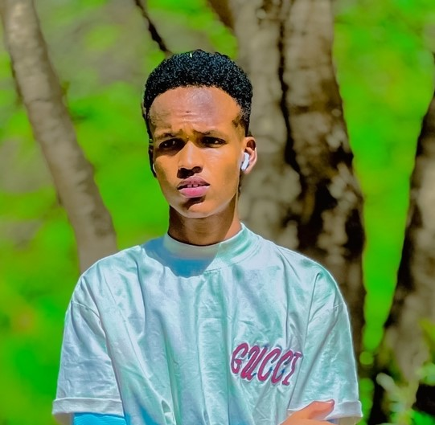

Our Team

Noor Hafow Bare
The Founder
Noor is the visionary behind Water Resource NGO, who established the organization with a mission to provide access to clean water in underserved communities. As the Project Manager, he oversees the overall strategy, fundraising efforts, and implementation of projects.
Noor Hafow
Lead Engineer
Noor leads the technical aspects of water resource management projects. He oversees the design, implementation, and maintenance of water purification systems, rainwater harvesting techniques, and other infrastructure.

Noor Hafow
Community outreach
Noor is responsible for fostering community engagement and awareness about water resource management initiatives.